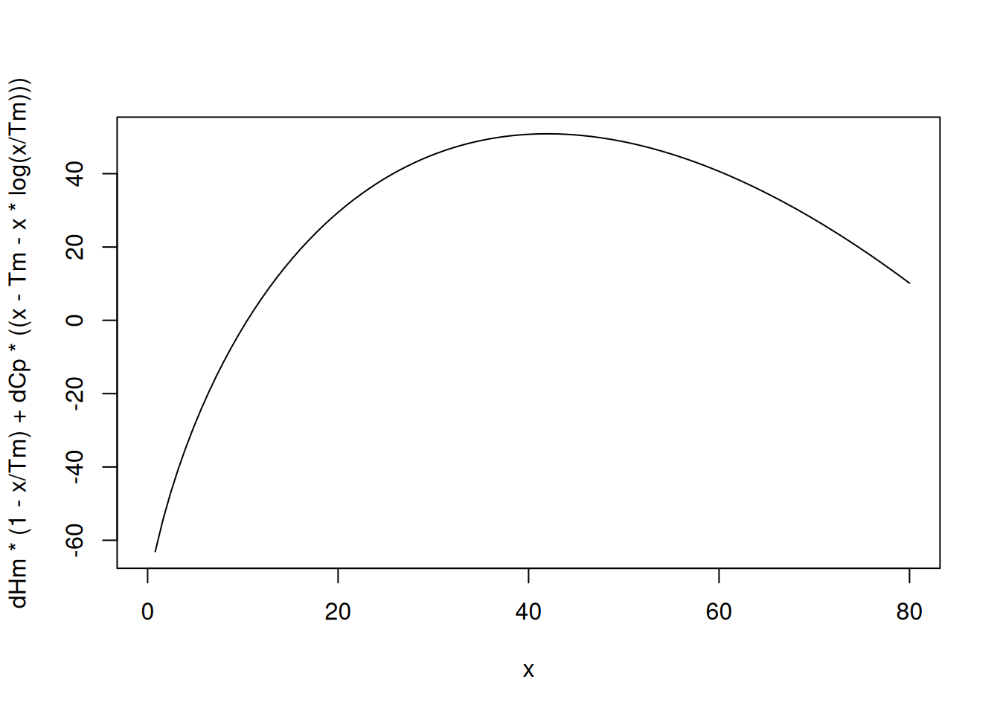

# Definition of matrices
A <- matrix(c(1, -308, 1, -318), ncol = 2, byrow = TRUE) # matrix A;
# the negative sign is due to the function having a negative slope
b <- matrix(c(4.4, -5.2), ncol = 1) # matrix bBiothermodynamics
Bioenergetics
While Kinetics deals with the flow of information involving a phenomenon, Thermodynamics works with the forces involved in it. These forces, called thermodynamic quantities, help to understand various biological phenomena, such as the equilibria listed below.
- Stability of biopolymers;
- Ligand-receptor interaction;
- Transport of biomolecules and ions;
- Conformational changes in biomacromolecules;
- Association of biopolymers;
- Electron transfer in proteins;
- Combustion and synthesis of biomolecules;
- Generation of metabolic energy.
Although Thermodynamics is not responsible for explaining atomic theory, molecular mechanisms or reaction rates, its theoretical formalism allows us to evaluate the energy changes (enthalpy, entropy, and Gibbs energy) that occur between the initial and final states of a transformation. From these quantities, it is possible to sketch mechanistic models of the transformations involved, based on the empirical set of similar observations reported.
The Gibbs equation for the equilibrium that describes these quantities is:
\[ \Delta G = \Delta H - T * \Delta S \tag{1}\]
Examples of this are the transformations in the values of \(\Delta\)H and \(\Delta\)S that can be extracted from a conformational transition that accompanies the thermal denaturation of a protein (Cooper 2004).
To do this, it is necessary to determine the value of \(\Delta\)G of the phase transition, which can be done in several ways, and using equally diverse methodology. Thus, through spectroscopic measurements (molecular absorption, fluorescence, luminescence), hydrodynamic measurements (viscosity, sedimentation coefficient, osmotic pressure), electrochemical measurements (potentiometry, voltammetry), or biological activity measurements, among many others, it is possible to quantify the thermodynamic parameter \(\Delta\)G. This, in turn, can be extracted from the following relations, considering a two-state transition:
\[ N \rightleftarrows D \tag{2}\]
\[ K_{eq} = \frac{[D]}{[N]} \tag{3}\]
\[ \Delta G = - R*T*ln(K_{eq}) \tag{4}\]
Where \(K_{eq}\), [D], and [N] represent, respectively, the equilibrium constant for protein denaturation, as well as its concentrations in the denatured and native forms.
A quick look at Equation 22 makes it clear that this is a linear function with temperature. Thus, it is plausible to imagine a system in which the thermodynamic quantities above (\(K_{eq}\) and, consequently, \(\Delta\)G) can be determined with temperature variation. Putting it into numbers:
At \(35^{o}\)C: \(\Delta\)G\(_{desn}\) = \(\Delta\)H\(_{desn}\) - 308 * \(\Delta\)S\(_{desn}\) = +4.4 kJ \(mol^{-1}\)
At \(45^{o}\)C: \(\Delta\)G\(_{desn}\) = \(\Delta\)H\(_{desn}\) - 318 * \(\Delta\)S\(_{desn}\) = -5.2 kJ \(mol^{-1}\)
Understand that a solution to the problem involves solving the equations sequentially, subtracting one from the other to standardize an unknown (say, \(\Delta\)S) that applied to the other equation will result in the second unknown (in this case, \(\Delta\)H). Although plausible, this procedure is manual and loses value if we imagine a 3rd temperature tested for the protein denaturation in question.
Another solution, more practical and computational, involves solving the system of linear equations, as follows:
Another solution, more practical and computational, involves solving the system of linear equations, as follows:
\[ a_{11}*x_1 + a_{12} * x_2 = b_1 \\ a_{21}*x_1 + a_{22} * x_2 = b_2 \tag{5}\]
Where \(x_1\) and \(x_2\) represent, respectively, \(\Delta\)H\(_{desn}\) and \(\Delta\)S\(_{desn}\).
In this case, we can set up a matrix system such that:
\[ a_{11}*x_1 + a_{12} * x_2 = b_1 \\ a_{21}*x_1 + a_{22} * x_2 = b_2 \tag{6}\]
That is,
\[ A = \begin{bmatrix} a_{11} & a_{12}\\ a_{21} & a_{22} \end{bmatrix} , \]
\[ x = \begin{bmatrix} b_1\\ b_2 \end{bmatrix} , \]
\[ b = \begin{bmatrix} x_1\\ x_2 \end{bmatrix} \]
Now solve the values of x (or \(\Delta\)’s) linearly:
\[ A * x = b \tag{7}\]
Using matrix algebra, solve Equation 7 for the values of x:
\[ x = A^{-1} * b \tag{8}\]
Since this is a system of linear equations, this solution has in itself the premise that the values of \(\Delta\)H and \(\Delta\)S do not vary in the temperature range studied.
Solution of a system of linear equations in R
To solve the problem from the previous section using
R, we first define the matrix for A and the matrix for b such that:\[ A = \begin{bmatrix} 1 & -308\\ 1 & -318 \end{bmatrix} , \]
\[ b = \begin{bmatrix} +4.4\\ -5.2 \end{bmatrix} \]
Thus,
According to that presented in Equation 8, the matrix solution can be obtained by the
solve command:# Matrix solution for linear system
solve(A) %*% b # # the %*% operation indicates the scalar product of two [,1]
[1,] 300.08
[2,] 0.96# vectors ("dot product")In this case, the thermodynamic parameters found were \(\Delta\)H\(_{desn}\) = 300 kJ \(mol^{-1}\) and \(\Delta\)S\(_{desn}\) = 960 J \(mol^{-1}\).
Note the “%*%” notation for the multiplication of two matrices in the last line of the code. This is the cross multiplication or dot product of two matrices. Matrix multiplication is defined only for two dimensionally compatible matrices in a given order. This implies that the number of columns in the 1st matrix is equal to the number of rows in the 2nd matrix. In this case, the resulting matrix will have the same number of rows as the 1st matrix and the same number of columns as the 2nd matrix. See the example:
\[ \begin{pmatrix} 1 \\ 2 \\ 3 \\ \end{pmatrix} * \begin{pmatrix} 1 & 2 & 3 \\ \end{pmatrix} = \begin{pmatrix} 1 & 2 & 3 \\ 2 & 4 & 6 \\ 3 & 6 & 9 \\ \end{pmatrix} \tag{9}\]
Another observation should also be made regarding the matrix solution of linear systems. A quick reflection on the linear nature of Gibbs’ Equation 22 and its application to the solution of thermodynamic parameters for the system of linear equations above suggests that we could obtain other values for \(\Delta\)G from other tested temperatures. Assuming that there were, say, 5 or 6 values of T with their respective values of \(\Delta\)G\(_{desn}\), and reinforcing the premise that the parameters \(\Delta\)H\(_{desn}\) and \(\Delta\)S\(_{desn}\) remained constant throughout the thermal range, we could easily conclude that it is a linear relationship of \(\Delta\)G\(_{desn}\) as a function of \(\Delta\)H\(_{desn}\) T.
Thus, as seen in the Enzymes chapter, we could solve for the parameters \(\Delta\)H\(_{desn}\) and \(\Delta\)SH\(_{desn}\) by linear fit. In fact, one of the Van’t Hoff expressions that define this linear relationship is:
Thus, as seen in the Enzymes chapter, we could solve for the parameters \(\Delta\)H\(_{desn}\) and \(\Delta\)SH\(_{desn}\) by linear fit. In fact, one of the Van’t Hoff expressions that define this linear relationship is:
\[ ln \, K_{eq} = - \frac{\Delta H}{R} * \frac{1}{T} + \frac{\Delta S}{R} \tag{10}\]
Another direct consequence is that any set of data pairs of dependent (y) and independent (x) variables, and that exhibit homogeneity of variances and normal distribution, as explained in the Enzymes chapter, can also be solved for in its parameters (intercept and slope) with the help of matrix algebra.
In fact, the linear adjustment matrix solution can be obtained from the relation below:
In fact, the linear adjustment matrix solution can be obtained from the relation below:
\[ \beta = (X^T \; X)^{-1} \; X^T*y \tag{11}\]
Therefore, the linear adjustment illustrated by the Lineweaver-Burk equation from the Enzymes chapter can also be performed with the help of matrices, although some statistical indicators presented in the table generated by the
As before, it is also vitally important that the matrix X containing the independent variable is created with unit values on the left, as follows:
lm function are extracted by other functions of the matrix/statistical calculation algorithm. In Equation 11 the term in parentheses involves the inversion operation of the matrix. In linear algebra there is no division operation for matrices, but only the multiplication of a matrix by a scalar or by the inverse of another. And even then, only if it is a square matrix. Thus, the term (X\(^{T}\) X)\(^{-1}\) can only be calculated with matrix inversion. In R this action is performed by the solve command.As before, it is also vitally important that the matrix X containing the independent variable is created with unit values on the left, as follows:
\[ X = \begin{bmatrix} 1 & x_{1}\\ 1 & x_{2}\\ 1 & x_{3}\\ ... & ... \end{bmatrix} \]
Thus, the solution to the problem explained in the Lineweaver-Burk equation from the Enzymes chapter can be solved in a matrix as:
# Matrix solution for the Lineweaver-Burk kinetic parameters
# Repeating the data for the Lineweaver-Burk variables
S <- seq(0.1, 1, length.out = 20) # generates a sequence with 20 points
# between 0 and 1 for substrate values
Vm <- 10
Km <- 0.5 # kinetic parameters
set.seed(1500) # establishes the same random seed as the direct graph
# of Michaelis-Menten, for reproducibility of the points
error <- runif(20, 0, 1) # command for uniform error (no. of points, min, max)
v <- Vm * S / (Km + S) + error # Michaelis-Menten equation
inv.S <- 1 / S # create variables for the double reciprocal
inv.v <- 1 / v
# Creation of matrices A and b
A2 <- matrix(c(rep(1, 20), inv.S), nrow = 20, byrow = FALSE) # create matrix
# with unit value required before the independent variable
b2 <- as.matrix(inv.v, nrow = 1, byrow = FALSE) # vector b
# Matrix solution of the linear fit
beta <- solve(t(A2) %*% A2) %*% t(A2) %*% b2
beta [,1]
[1,] 0.11363419
[2,] 0.03277244Note that the intercept (\(\beta\) 1) and slope (\(\beta\) 2) values are close to those found with the help of the
lm function of R.Matrices and R
The use of matrices in solving linear problems and non-linear is quite vast. In fact, a linear fit is solved computationally by the use of matrices, rather than by summations. Likewise, some algorithms for non-linear fit also implement matrix algebra in problem solving (Gauss-Newton, Levenberg-Marquadt).
Therefore, it is interesting to have a quick overview of the matrix potential that
Therefore, it is interesting to have a quick overview of the matrix potential that
R has.# Some manipulations with matrices
## Identifying rows and columns
res <- matrix(c(-308, -318),
nrow = 2, byrow = TRUE, # matrix definition
dimnames = list(c("Delta H", "Delta S"), "kJ/mol")
)
res kJ/mol
Delta H -308
Delta S -318## Arithmetic operations
m1 <- matrix(c(1, 2, 3, 4), nrow = 2, byrow = T)
m2 <- matrix(c(4, 5, 6, 7), nrow = 2, byrow = T)
m1 + 5 [,1] [,2]
[1,] 6 7
[2,] 8 9m2 - 7 # addition or subtraction in scalar [,1] [,2]
[1,] -3 -2
[2,] -1 0m1^2 [,1] [,2]
[1,] 1 4
[2,] 9 16sin(m2) # power or trigonometry [,1] [,2]
[1,] -0.7568025 -0.9589243
[2,] -0.2794155 0.6569866m1 + m2 # addition of elements in matrices of equal dimension [,1] [,2]
[1,] 5 7
[2,] 9 11m1 * m2 # multiplication of elements in matrices of equal dimension [,1] [,2]
[1,] 4 10
[2,] 18 28m1 %*% m2 # dot product of vectors [,1] [,2]
[1,] 16 19
[2,] 36 43det(m1) # determinant of a matrix[1] -2t(m2) # transposition of a matrix [,1] [,2]
[1,] 4 6
[2,] 5 7diag(m1) # diagonal matrix[1] 1 4solve(m2) # inverse of a matrix [,1] [,2]
[1,] -3.5 2.5
[2,] 3.0 -2.0eigen(m1) # eigenvalue and eigenvector of a matrixeigen() decomposition
$values
[1] 5.3722813 -0.3722813
$vectors
[,1] [,2]
[1,] -0.4159736 -0.8245648
[2,] -0.9093767 0.5657675R also supports several other operations used in numerical and symbolic calculations that use matrices, such as the functions kronecker (matrix multiplication), svd (Single Value Decomposition), qr (QR Decomposition), and chol (Cholesky Decomposition).Solving thermodynamic parameters of enzyme stability
Thermodynamic parameters, such as those contained in the Van’t Hoff expression, Equation 10, can also be obtained simultaneously by matrix algebra. For example, it is common in Biotechnology to evaluate thermostability parameters of enzymes subjected to thermal stress (as well as chemical stress, such as pH, urea or use of proteases). This is done in order to verify, for example, whether an enzyme can withstand high temperatures in industrial processes, to compare enzymes modified by site-directed mutation, or to evaluate the behavior of enzymes associated with various pathogenesis. The formalism of this analysis goes through the Arrhenius Collision Theory, as well as the Eyring Transition State Theory, resulting in the linear system of equations as follows:
\[ \begin{cases}\Delta G^\ddagger = \Delta H^\ddagger-T* \Delta S^\ddagger \\ ln(\frac{kcat*h}{K_B*T})=-\frac{1}{RT}*\Delta H^\ddagger + \frac{1}{R}*\Delta S^\ddagger \end{cases} \tag{12}\]
Where the terms with \(\ddagger\) symbolize the variations of quantities related to the activation (or deactivation) of the enzyme (transition state of the activated complex), \(K_{B}\) represents the Boltzmann constant (1.381x10\(^{-23}\) JK\(^{-1}\)), h the Planck constant (6.686x10\(^{-34}\) J*s), and R the general gas constant (8.314 JK\(^{-1}\) mol\(^{-1}\)). It is not always possible to converge a matrix solution by simply using cross multiplication (dot product).
The code snippet below exemplifies this attempt, based on the data published by Riaz et al (Bhatti et al. 2007) below, and previously considering the matrices A and b as a function of the parameters specified by the authors:
\[ \Delta G^{\ddagger}=65920\, J\,mol^{-1} \\ T = 328 K \\ kcat = 217 s^{-1} \tag{13}\]
\[ A = \begin{bmatrix} 1 & -328\\ -3.67e-4 & 0.120\\ \end{bmatrix} , \]
\[ b = \begin{bmatrix} 65920\\ -24.17\\ \end{bmatrix} \]
# Attempt at a simple matrix solution in published data
# (Appl. Microbiol. Biotechnol, 73, 1290, 2007):
A <- matrix(c(1, -3.67e-4, -328, 0.120), nrow = 2, byrow = TRUE)
b <- matrix(c(65921, -24.17), nrow = 2)
solve(A) %*% b [,1]
[1,] -21038593
[2,] -57505488910Note the inconsistency for the resulting thermodynamic parameters. The matrix solution by the
solve command also suffers from solving the problem, incurring an error if executed, as in the following excerpt. Also note the distinct possibility for constructing the matrices.Aframe <- data.frame(c(1, -3.67e-4), c(-328, 0.120))
A <- as.matrix(Aframe)
b <- as.matrix(c(65921, -24.17))
solve(t(A) %*% A) %*% t(A) %*% bFor these more complex situations, it may be useful to use
R packages, such as rootSolve already used or nleqslv used previously. In this sense, the root search minimization for the system of equations can be demonstrated as follows:# Minimization for roots of a system of thermodynamic equations
library(rootSolve)
T <- 328
R <- 8.314
h <- 6.626e-34
kb <- 1.381e-23
kcat <- 217
DG <- -R * T * log((kcat * h) / (kb * T)) # 65920 J/mol
model <- function(x) c(x[1] - T * x[2] - DG, x[2] / R - x[1] / (R * T) -
log((kcat * h) / (kb * T)))
(ss <- multiroot(model, start = c(50000, 50000)))$root
[1] 40843.50837 -76.45441
$f.root
[1] 2.110028e-09 -7.744916e-13
$iter
[1] 3
$estim.precis
[1] 1.055401e-09By this numerical solution the values found for the parameters were \(\Delta\) H\(^{\ddagger}\) = 40.8 kJmol\(^{-1}\) and \(\Delta\) S\(^{\ddagger}\) = -76.5 Jmol\(^{-1}\)K\(^{-1}\).
Comparing the values, the authors found \(\Delta\) H\(^{\ddagger}\) = 33.3 kJmol\(^{-1}\) and \(\Delta\) S\(^{\ddagger}\) = -99.8 Jmol\(^{-1}\)K\(^{-1}\). Note the similarity of the results obtained by minimizing roots with the parameters found by the authors. The value of \(\Delta\) H\(^{\ddagger}\) for these, however, was obtained only from obtaining the experimental value of Arrhenius activation energy (Ea), by the slope of a linearized graph of the reaction rate, as follows:
Comparing the values, the authors found \(\Delta\) H\(^{\ddagger}\) = 33.3 kJmol\(^{-1}\) and \(\Delta\) S\(^{\ddagger}\) = -99.8 Jmol\(^{-1}\)K\(^{-1}\). Note the similarity of the results obtained by minimizing roots with the parameters found by the authors. The value of \(\Delta\) H\(^{\ddagger}\) for these, however, was obtained only from obtaining the experimental value of Arrhenius activation energy (Ea), by the slope of a linearized graph of the reaction rate, as follows:
\[ k = A *e^{-Ea/RT} \\ ln(k) = \frac{\Delta S^{\ddagger}}{R} - \frac{\Delta H^{\ddagger}}{R} * \frac{1}{T} \tag{14}\]
Although a significant adequacy of the values obtained by the authors and at a single temperature is noted, caution must be exercised with the procedure, since minimizations usually require good initialization seeds of the algorithm to produce good results. Furthermore, the very nature of the thermodynamic relationship between a reaction rate (such as kcat) and the resulting Gibbs energy change occurs on an exponential scale:
\[ k = f(kcat) = e^{-\Delta G^{\ddagger}/RT} \tag{15}\]
This means in practice that small changes in \(\Delta\) G\(^{\ddagger}\) result in huge changes in the value of k (in this case, kcat). For this reason, small differences in the value of \(\Delta\) G\(^{\ddagger}\) can result in huge differences in \(\Delta\) H\(^{\ddagger}\) and \(\Delta\) S\(^{\ddagger}\) for the solution of the linear system. To illustrate this impact more directly, try changing the value of \(\Delta\) G\(^{\ddagger}\), rounding it:
require(rootSolve)
T <- 328
R <- 8.314
h <- 6.626e-34
kb <- 1.381e-23
kcat <- 217
DG <- 66000
model <- function(x) c(x[1] - T * x[2] - DG, x[2] / R - x[1] / (R * T) -
log((kcat * h) / (kb * T)))
(ss <- multiroot(model, start = c(50000, 50000)))$root
[1] 51579492242 157254348
$f.root
[1] 177.50881195 -0.09422566
$iter
[1] 3
$estim.precis
[1] 88.80152Enthalpy of Reaction by Matrices
Chemical reactions are usually represented by the following equation:
\[ 0 = \sum_{i=1}^{N} \nu_i B_i \tag{16}\]
Thus, if we observe the representations that accompany chemical reactions, we will see that they also constitute linear functions, as in the examples below:
\[ 2 C_2H_2(g)+ 5 O_2(g) \rightleftarrows 4 CO_2(g) + 2 H_2O(l), \\ \Delta_fH^o = -2600 \, kJ/mol\\ 2 C_2H6(g) + 7 O_2(g) \rightleftarrows 4 CO_2(g) + 6 H_2O(l), \\ \; \Delta_fH^o = -3210 \, kJ/mol \\ H_2(g) + \frac{1}{2} O_2(g) \rightleftarrows H_2O(l), \\ ; \Delta_fH^o = -286 \, kJ/mol\\ C_2H_2(g) + 2H_2(g) \rightleftarrows C_2H_6(g), \\ \; \Delta_fH^o = ? \tag{17}\]
And, if we select some reactions that have relationships between them, such as those presented in Equation 17 above, we will then have a system of linear equations, capable of being solved by matrix algebra. This relationship between chemical reactions that involve the formation of compounds refers to Hess’s Law.
Mathematically, Hess’s Law can be expressed as:
Mathematically, Hess’s Law can be expressed as:
\[ \Delta_fH^o = \sum_{n=1}^{\infty} \nu \Delta_fH^o_P - \sum_{n=1}^{\infty} \nu \Delta_fH^o_R \tag{18}\]
Where \(\nu\) represents the stoichiometry of the reaction, that is, the number of moles of each compound/element, while P and R refer to the Product and Reactant.
Returning to the Equation 17 example, what we want is to obtain the value of the reaction enthalpy for ethane (\(C_2H_6\)), based on the reaction enthalpy values of the related species (Khalil 2000). There are at least three possible solutions, in which the reaction enthalpy can be determined by the bond enthalpy, by the formation enthalpy itself, and by Hess’s Law, which can be calculated using matrices.
To do this, it is necessary to 1) compose the matrices A and b, 2) calculate the vector of coefficients beta, and 3) perform the scalar product (%*%) of beta with a matrix formed by the formation enthalpy values. The rationale for composing the matrices involves listing each compound with its reaction stoichiometry, and requires that a negative value be given to reactants, while a positive value is given to products.
The table below illustrates this construction for the problem in question.
To do this, it is necessary to 1) compose the matrices A and b, 2) calculate the vector of coefficients beta, and 3) perform the scalar product (%*%) of beta with a matrix formed by the formation enthalpy values. The rationale for composing the matrices involves listing each compound with its reaction stoichiometry, and requires that a negative value be given to reactants, while a positive value is given to products.
The table below illustrates this construction for the problem in question.
library(knitr) # to generate the table
comp <- c("C2H2", "O2", "CO2", "H2O", "C2H6", "H2") # list of compounds
# involved
rea1 <- c(-2, -5, +4, +2, 0, 0) # stoichiometry (reaction1)
rea2 <- c(0, -7, +4, +6, -2, 0) # stoichiometry (reaction2)
rea3 <- c(0, -0.5, 0, +1, 0, -1) # stoichiometry (reaction3)
incog <- c(-1, 0, 0, 0, +1, -2) # stoichiometry of the reaction with enthalpy
# unknown
tab_esteq <- data.frame(comp, rea1, rea2, rea3, incog) # dataframe with the
# results
colnames(tab_esteq) <- c("compound", "reaction 1", "reaction 2", "reaction 3",
"ethane") # name the columns
knitr::kable(tab_esteq, caption = "Reaction stoichiometry for a matrix solution of ethane formation (C2H6).", "pipe") # table| compound | reaction 1 | reaction 2 | reaction 3 | ethane |
|---|---|---|---|---|
| C2H2 | -2 | 0 | 0.0 | -1 |
| O2 | -5 | -7 | -0.5 | 0 |
| CO2 | 4 | 4 | 0.0 | 0 |
| H2O | 2 | 6 | 1.0 | 0 |
| C2H6 | 0 | -2 | 0.0 | 1 |
| H2 | 0 | 0 | -1.0 | -2 |
And the code snippet that follows calculates the value of \(\Delta H_r^o\) for the formation of ethane.
# Matrix solution for enthalpy of formation
A <- matrix(c(-2, 0, 0, -5, -7, -0.5, 4, 4, 0, 2, 6, 1, 0, -2, 0, 0, 0, -1),
nrow = 6, byrow = T) # create matrix of reactions with known
# enthalpy variation
b <- matrix(c(-1, 0, 0, 0, 1, -2), nrow = 6, byrow = T) # create matrix of
# stoichiometric coefficients of reaction with unknown
# enthalpy variation
beta <- solve(t(A) %*% A) %*% t(A) %*% b # beta calculation
energ <- matrix(c(-2600, -3210, -286), nrow = 1, byrow = T) # create matrix
# with enthalpy values
ethane <- energ %*% beta
cat("Value for deltaHr ethane: ", ethane, " kJ/mol")Value for deltaHr ethane: -267 kJ/molThermodynamic Quantities by Polynomial Fit
As seen in the previous sections of this chapter and in the Enzymes chapter, linear relations allow the extraction of kinetic or thermodynamic parameters associated with biophysical-chemical phenomena, such as in the study of ligand associations with biopolymers, self-association of biomacromolecules, enzyme kinetics, or thermodynamic stability equilibrium of biopolymers. Regarding the latter, Equation 10 illustrates the linear relationship between a thermodynamic parameter monitored during the experiment, such as \(K_{eq}\) or \(\Delta\)G, and temperature (although other perturbations could also be viable, such as pH, denaturant content, ionic strength, etc.).
However, we could not use linear matrix relationships or linear fits to solve quantitative parameters in situations that do not rely on linear behavior between variables, as reported by Equation 10, for example.
However, we could not use linear matrix relationships or linear fits to solve quantitative parameters in situations that do not rely on linear behavior between variables, as reported by Equation 10, for example.
To illustrate, the relationship between temperature and the value for \(\Delta\)G of the self-association of apolipoprotein Apo A-II present in HDL lipoprotein does not exhibit a linear profile, and can be obtained from the literature with the help of the following code snippet: (Waelbroeck, Van Obberghen, and De Meyts 1979).
# Dependence of T on deltaG for insulin and receptor
T <- c(5.29, 10.07, 15.23, 20.21, 25.11, 30.29, 37.39) + 273
# temperature data, in degrees Kelvin
dG <- c(11.74, 12.17, 12.46, 12.73, 12.88, 12.98, 13.13) * -1e3
# -deltaG data, in kcal/mol
plot(T, dG,
xlab = "T, K", ylab = expression(paste(Delta, "G, kcal/mol"))
)Figure 1 shows a parabolic trend between the test temperature and the Gibbs energy variation of the process. Thus, a 3rd degree polynomial can be fitted to the data, as follows.
# Polynomial fit of thermodynamic parameters
pol3 <- lm(dG ~ poly(T, 3, raw = TRUE)) # fit to 3rd degree polynomial; # "raw=TRUE" is essential
# Alternatively, one can also fit polynomials as
# pol3<-lm(dG ~ T + I(T^2)+I(T^3))
summary(pol3)
Call:
lm(formula = dG ~ poly(T, 3, raw = TRUE))
Residuals:
1 2 3 4 5 6 7
2.350 -13.432 26.731 -16.407 -8.577 12.164 -2.829
Coefficients:
Estimate Std. Error t value Pr(>|t|)
(Intercept) 8.970e+05 2.449e+05 3.663 0.0352 *
poly(T, 3, raw = TRUE)1 -8.836e+03 2.498e+03 -3.537 0.0385 *
poly(T, 3, raw = TRUE)2 2.866e+01 8.492e+00 3.375 0.0433 *
poly(T, 3, raw = TRUE)3 -3.105e-02 9.613e-03 -3.230 0.0482 *
---
Signif. codes: 0 '***' 0.001 '**' 0.01 '*' 0.05 '.' 0.1 ' ' 1
Residual standard error: 21.6 on 3 degrees of freedom
Multiple R-squared: 0.999, Adjusted R-squared: 0.9981
F-statistic: 1045 on 3 and 3 DF, p-value: 5.02e-05plot(T, dG,
xlab = "T, K", ylab = expression(paste(Delta, "G, kcal/mol"))
# graph of T x deltaG
)
lines(T, fitted(pol3), col = "red") # curve fitted to the data
Here it is worth mentioning that obtaining the parameters of a polynomial can also be validated with the help of linear algebra (matrices). For example, build the matrix A of the temperature values, and the matrix b of the values of \(\Delta\)G:
\[ A = \begin{bmatrix} 1 & 278.29\\ 1 & 283.07\\ 1 & 288.23\\ 1 & 293.21\\ 1 & 298.11\\ 1 & 303.29\\ 1 & 310.39\\ \end{bmatrix} , \] \[ b = \begin{bmatrix} -11740\\ -12170\\ -12460\\ -12730\\ -12880\\ -12980\\ -13130\\ \end{bmatrix} \]
In this case, the matrix operation takes into account the conversion of the matrix A of the independent variable into an alternation matrix, also known as Vandermonde matrix. A Vandermonde matrix is presented as follows:
\[ matrix \,V = \begin{bmatrix} 1 & x_1 & x_1^2 & x_1^3 & ... \\ 1 & x_2 & x_2^2 & x_2^3 & ... \\ 1 & x_3 & x_3^2 & x_3^3 & ...\\ 1 & ...& ... & ... & ...\\ \end{bmatrix} , \]
An apparent limitation of this procedure is that the adjustment must be performed with few experimental points, since the exponential term grows with the number of points. On the other hand, the matrix solution circumvents the need to obtain statistical sums of the variables.
Now just apply the same matrix relation of Equation 8, in this case, for four interleaved points of the experimental data above, and therefore producing a 4th degree polynomial:
R has a package to automate this transformation, matrixcalc, exemplified in the code snippet below:Now just apply the same matrix relation of Equation 8, in this case, for four interleaved points of the experimental data above, and therefore producing a 4th degree polynomial:
# Polynomial adjustment 4th degree for thermodynamic parameters
T <- c(5.29, 15.23, 25.11, 37.39) + 273 # temperature data,
# in degrees Kelvin
dG <- c(11.74, 12.46, 12.88, 13.13) * -1e3 #
library(matrixcalc)
# Creating matrices A (Vandermonde) and b
b <- as.matrix(dG, nrow = 4, byrow = TRUE) # vector b
A <- vandermonde.matrix(alpha = T, n = 4)
A # function to create alternation matrix (Vandermonde) [,1] [,2] [,3] [,4]
[1,] 1 278.29 77445.32 21552259
[2,] 1 288.23 83076.53 23945149
[3,] 1 298.11 88869.57 26492908
[4,] 1 310.39 96341.95 29903579sol.vnd <- solve(A) %*% b
sol.vnd # polynomial coefficients (4th degree) [,1]
[1,] 5.095658e+05
[2,] -4.886799e+03
[3,] 1.525183e+01
[4,] -1.589352e-02To plot the data, simply convert the polynomial coefficients above into the resulting polynomial expression, which can be done with the
polynom package:library(polynom) # converts vector of coefficients into symbolic polynomial
p <- as.polynomial(sol.vnd)
p2 <- as.function(p) # allows converting the polynomial to the curve function
plot(T, dG)
curve(p2, from = 273, to = 315, add = TRUE) # smooth polynomial curve
Although the polynomial fit, either by the
However, it is possible to obtain a good approximation of the quantities \(\Delta\)H (enthalpy), \(\Delta\)S (entropy) and \(\Delta\)Cp (heat capacity) that phenomenologically model the thermodynamic behavior at a given temperature, by specific relations between these quantities (Edelhoch and Osborne Jr 1976).
R eigenfunction (lm) or by the matrix solution above, reveals good adherence of the model to the experimental data, as represented by Figure 2 and the results table above, there is no correlation of thermodynamic parameters, since it is an empirical mathematical model, and not an analytical one for the system.However, it is possible to obtain a good approximation of the quantities \(\Delta\)H (enthalpy), \(\Delta\)S (entropy) and \(\Delta\)Cp (heat capacity) that phenomenologically model the thermodynamic behavior at a given temperature, by specific relations between these quantities (Edelhoch and Osborne Jr 1976).
\[ \Delta S = -(\frac{\partial \Delta G}{\partial T})_p \tag{19}\]
In short, the variation of entropy can be defined as the gradient of the variation of Gibbs energy with temperature. Another way of saying it would be to state that the entropy variation can also be defined as the first derivative of that relation, which can be defined empirically by:
\[ \Delta G = a+bT+cT^2+dT^3 \tag{20}\]
Thus, the value of \(\Delta\)S can be obtained by the first derivative of the empirical relation above (Equation 20):
\[ \Delta S = -(\frac{\partial \Delta G}{\partial T})_p = -b-2cT-3dT^2 \tag{21}\]
The value of \(\Delta\)H, in turn, can now be extracted from the Equation 22 repeated here, together with the Equation 20:
\[ \Delta G = \Delta H - T * \Delta S \tag{22}\]
\[ \Delta H = \Delta G +T * \Delta S \tag{23}\]
Applying the empirical equations for the thermodynamic parameters above:
\[ \Delta H = (a+bT+cT^2+dT^3) +T(-b-2cT-3dT^2) \tag{24}\]
\[ \Delta H = a-cT^2-2dT^3 \tag{25}\]
Similarly, the heat capacity at constant pressure can be defined as:
\[ \Delta Cp = -(\frac{\partial \Delta H}{\partial T})_p \tag{26}\]
That is, the value of \(\Delta\)Cp can be approximated by the first derivative of \(\Delta\)H (Equation 24) over T. That is:
\[ \Delta Cp = -2cT-6dT^2 \tag{27}\]
Although they are approximations, the thermodynamic parameters thus obtained reflect the possibility of describing a phenomenon, such as the interaction of insulin with its receptor (Waelbroeck, Van Obberghen, and De Meyts (1979)), from the perspective of preponderant weak bonds, such as hydrogen bonds, van der Waals forces, salt effect, electrostatic interactions and hydrophobic effect (Ross and Subramanian 1981), only by monitoring an equilibrium constant with temperature. The code snippet below solves the thermodynamic parameters for the complexation of insulin with its receptor at 25\(^o\)C by the method described.
# Polynomial solution of thermodynamic parameters for interaction of
# insulin with receptor
T <- c(5.29, 10.07, 15.23, 20.21, 25.11, 30.29, 37.39) +
273 # temperature data, in degrees Kelvin
dG <- c(11.74, 12.17, 12.46, 12.73, 12.88, 12.98, 13.13) *
-1e3 # -deltaG data, in kcal/mol
# Fit to 2nd degree polynomial
pol3 <- lm(dG ~ poly(T, 3, raw = TRUE)) # fit to 3rd degree polynomial degree
Tref <- 298 # reference temperature, in degrees Kelvin
# Calculations
dG <- coef(pol3)[1] + coef(pol3)[2] * Tref + coef(pol3)[3] *
Tref^2 + coef(pol3)[4] * Tref^3 # deltaG
dS <- -coef(pol3)[2] - 2 * coef(pol3)[3] * Tref - 3 * coef(pol3)[4] *
Tref^2 # deltaS
dH <- coef(pol3)[1] - coef(pol3)[3] * Tref^2 - 2 * coef(pol3)[4] *
Tref^3 # deltaH
dCp <- -2 * coef(pol3)[3] * Tref - 6 * coef(pol3)[4] * Tref^2 # deltaCp
# Parameters in 298 K
cat("deltaG value: ", dG, "cal/mol", "\n")deltaG value: -12868.43 cal/mol cat("deltaS value: ", dS, "cal/mol/K", "\n")deltaS value: 27.29257 cal/mol/K cat("deltaH value: ", dH, "cal/mol", "\n")deltaH value: -4735.248 cal/mol cat("deltaCp value: ", dCp, "cal/mol/K", "\n")deltaCp value: -537.5956 cal/mol/K The values found for the interaction are very close to those reported by the authors at 25\(^o\)C (Waelbroeck, Van Obberghen, and De Meyts (1979)), although they used a fit with a 2nd degree polynomial. If you change the code snippet above to a polynomial of the same degree and omit the terms of the thermodynamic equations that identify the coefficient d, a value of \(\Delta\)Cp of -735 kcal/mol should be observed, very similar to the reported value of -766 kcal/mol.
Thermodynamic Stability of Biopolymers
The thermodynamic stability of proteins, enzymes and nucleic acids is essential for the study of new engineered biopolymers, modified complex matrices (artificial plasma, for example), as well as for the research of drug and medicine candidates. In general terms, the biopolymer under evaluation is considered in a two-state model, native and denatured, as presented in the Equation 3 of this chapter.
However, as the experimental determination of [N] and [D] concentrations becomes complex, we seek to obtain a relationship between them, specifically, their fraction, such that:
\[ f_D+f_N = 1 \tag{28}\]
Which results in:
\[ f_N = 1 - f_D \tag{29}\]
Thus, an experimental signal S obtained in the presence of N and D fractions in a biopolymer sample can be represented as:
\[ S = f_N * S_N +f_D * S_D \tag{30}\]
Substituting Equation 29 in Equation 30 we obtain:
\[ f_D = \frac{S_i-S_N}{S_D-S_N} \tag{31}\]
Where Si represents the signal at point i.
Thus, even if the concentrations [N] and [D] are not directly obtained, their fractions can be recovered from the signal obtained from denaturation tests against various perturbants, such as temperature, pH, salts or denaturing reagents (urea, guanidine chloride, for example).
In this way, the value of the equilibrium thermodynamic constant of denaturation K\(_D\) can also be recovered, such that:
\[ K_D = \frac{[D]}{[N]}=\frac{f_D}{f_N} \tag{32}\]
Inserting Equation 29 into Equation 32, we obtain:
\[ K_D = \frac{f_D}{1-f_D} \tag{33}\]
And, therefore,
\[ \Delta G_D = -RT*ln\;K_D \tag{34}\]
In this way, it is possible to evaluate the thermodynamic stability of a biopolymer by its stability curve, contrasting the perturbant against the value of \(\Delta\)G\(_D\) obtained by the above procedures.
Analytically, a stability curve can be generated from the constant parameters in the integrated Gibbs-Helmholtz equation (LiCata and Liu (2011)):
\[ \Delta G(T) = \Delta H_m(\frac{Tm-T}{Tm})-\Delta Cp[Tm-T(1-ln \; \frac{Tm}{T})]) \tag{35}\]
Thus, a stability curve can be illustrated by the following code snippet:
# Denaturation curve for protein
Tm <- 85
dHm <- 180
dCp <- 3
x <- 0:80
curve(dHm * (1 - x / Tm) + dCp * ((x - Tm - x * log(x / Tm)))
, xlim = c(0, 80)) # Nicholson1996; Sholz2009
Quantitative Structure-Function Relationship (QSAR) and Multilinear Fitting
The same procedures employed to solve matrix problems, specifically with Equation 11, can also accommodate a QSAR (Quantitative Structure-Function Relationship) analysis of interest. For example, benzodiazepinone derivatives (TIBO) are known to inhibit reverse transcriptase (Tong et al. 2018), an enzyme that catalyzes the conversion of RNA into viral DNA in acquired immune deficiency syndrome (AIDS). In this sense, observations derived from the QSAR study can contribute to the design of potential HIV transcriptase inhibitors. Thus, Tong et al. proposed a multilinear predictive model relating some properties of TIBO analogues with biological activity, as follows:
\[ pIC_{50}=x_0+x_1*S+x_2*W \] {#eq:eqTIBO}
Where pIC\(_{50}\) represents the measured biological activity (-log IC\(_{50}\)), S indexes solubility values, and W refers to the width parameter of the first atom of the substituent group. These data are tabulated below:
# Tabulation data for QSAR
group <- c("H", "Cl", "SCH3", "OCH3", "CN", "CHO", "Br", "CH3", "CCH")
# substituent groups in TIBO
S <- c(3.53, 4.24, 4.09, 3.45, 2.96, 2.89, 4.39, 4.03, 3.8) # solubility parameter
W <- c(1, 1.8, 1.7, 1.35, 1.6, 1.6, 1.95, 1.6, 1.6)
# group width parameter
pIC50 <- c(7.36, 8.37, 8.3, 7.47, 7.25, 6.73, 8.52, 7.87, 7.53)
# biological activity of TIBO
tab.tibo <- data.frame(group, S, W, pIC50)
knitr::kable(tab.tibo, caption = "multivariate data of biological activity of TIBO and predictive parameters.", "pipe") # table| group | S | W | pIC50 |
|---|---|---|---|
| H | 3.53 | 1.00 | 7.36 |
| Cl | 4.24 | 1.80 | 8.37 |
| SCH3 | 4.09 | 1.70 | 8.30 |
| OCH3 | 3.45 | 1.35 | 7.47 |
| CN | 2.96 | 1.60 | 7.25 |
| CHO | 2.89 | 1.60 | 6.73 |
| Br | 4.39 | 1.95 | 8.52 |
| CH3 | 4.03 | 1.60 | 7.87 |
| CCH | 3.80 | 1.60 | 7.53 |
Note that there are two predictor variables and one dependent variable, and whose solution can be found by multilinear or multiple linear fit.
R allows this to be done in at least two ways: internal linear fit function (lm) or matrix algebra.Multiple linear fit by lm function:
In a simplified way, one can obtain the multivariate expression that defines the relationship of the predictive quantities W and S with the biological activity of TIBO by:
# Multilinear fitting in QSAR
lm.tibo <- lm(tab.tibo$pIC50 ~ tab.tibo$S + tab.tibo$W)
# command for multilinear fitting;
# Alternatively,
# lm.tibo <- lm(cbind(S,W)~pIC50)
summary(lm.tibo)
Call:
lm(formula = tab.tibo$pIC50 ~ tab.tibo$S + tab.tibo$W)
Residuals:
Min 1Q Median 3Q Max
-0.27636 -0.15649 0.02922 0.08911 0.24761
Coefficients:
Estimate Std. Error t value Pr(>|t|)
(Intercept) 3.5903 0.5435 6.606 0.000579 ***
tab.tibo$S 0.9571 0.1519 6.300 0.000746 ***
tab.tibo$W 0.3619 0.3020 1.199 0.275888
---
Signif. codes: 0 '***' 0.001 '**' 0.01 '*' 0.05 '.' 0.1 ' ' 1
Residual standard error: 0.2045 on 6 degrees of freedom
Multiple R-squared: 0.912, Adjusted R-squared: 0.8826
F-statistic: 31.07 on 2 and 6 DF, p-value: 0.0006826Note the most direct way to assign already declared variables to an
R function (*dataframe $ vector). This is the simplest way, since it does not depend on extra packages (like dplyr), although it is less readable.Expressing the results in multiple linear function:
\[ y=5.75+0.14*S+0.95*W \tag{36}\]
Multiple linear adjustment by matrices:
The beta coefficients obtained above can also be found by linear algebra, using the b biological activity matrix and the A matrix containing the independent variables, this one also created with unit values on the left, as before, followed by the application of Equation 11:
\[ X = \begin{bmatrix} 1 & S_{1} & W_{1} \\ 1 & S_{2} & W_{2}\\ 1 & S_{3} & W_{3}\\ ... & ... \end{bmatrix} \]
# Creating matrices A and b
A <- matrix(c(rep(1, 9), S, W), nrow = 9, byrow = FALSE)
# creates matrix with unit value required before the independent variable
b <- as.matrix(pIC50, nrow = 1, byrow = FALSE) # vector b
# Matrix solution of linear adjustment
beta <- solve(t(A) %*% A) %*% t(A) %*% b
beta [,1]
[1,] 3.5902556
[2,] 0.9571092
[3,] 0.3619292Note that the values for the coefficients are coincident. In practice, the multiple linear adjustment procedure can be used, as in the example above, to predict a response (such as pIC\(_{50}\)) as a function of predictor variables (such as S and W).
This multilinear matrix procedure can also be applied to other types of multivariate analysis, such as factorial experiment and response surface methodology. This is due to the very nature of these systems, when linear. See the applications below. Even for quadratic response surface methodology (where the parameters vary with the square of the predictor variables), the matrix solution (Equation 11) is also possible.
This multilinear matrix procedure can also be applied to other types of multivariate analysis, such as factorial experiment and response surface methodology. This is due to the very nature of these systems, when linear. See the applications below. Even for quadratic response surface methodology (where the parameters vary with the square of the predictor variables), the matrix solution (Equation 11) is also possible.
\[ y = b_0+b_1*x, \, linear fit\ \\ y = b_0+b_1*x_1+b_2*x_2+...+b_n*x_n, \, fit \, multilinear \\ y = b_0+b_1*x_1+b_2*x_2+...+b_n*x_n, \, methodology \, of \, surface \, of \, response \, linear \\ y = b_0+b_1*x_1+b_2*x_2+b_{12}*x_1*x_2, \, planning \, factorial \, 2^2 \\ y = b_0+b_1*x_1+b_2*x_2+b_3*x_3+b_{12}*x_1*x_2+,b_{13}*x_1*x_3+b_{23}*x_2*x_3+b_{123}*x_1*x_2*x3 \, experiment \, factorial \, 2^3 \\ y = b_0+b_1*x_1+b_2*x_2+b_{11}*x_1^2+b_{22}*x_2^2+b_{12}*x_1*x_2, \, quadratic \, response \, surface \, methodology \\ \tag{37}\]
As a rule, all applications listed in Equation 37 can be solved with the help of matrix relations of the equations Equation 11 (linear, multilinear and linear response surface adjustments) or Equation 7 (factorial designs). Two situations of this nature are exemplified below.
A word about matrices and applications
As already noted, the use of matrices extends to various situations, not necessarily of a Biochemical or Biophysical nature, data adjustments, Hess’s or Lambert-Beer’s Law, as well as the construction of a menu (matrix of ingredients for each dish by price of each ingredient), or the daily caloric expenditure in physical activity (matrix of weekly workload of each activity by matrix of caloric expenditure of the activity). In fact, they are tools used in Bioinformatics, Economics, Ecology, Engineering, and many other areas, satisfying the basic relations between the variables under study. These conditions, in turn, represent nothing more than the sum of products, in which these are manifested by quantities declared in the problem. Thus, a small representation of the statement above could be illustrated simply as:
\[ y = \sum_{n=1}^{\infty} (x_1*x_2) \tag{38}\]
References
Bhatti, Haq Nawaz, M Hamid Rashid, Rakhshanda Nawaz, A Mukhtar Khalid, Muhammad Asgher, and A Jabbar. 2007. “Effect of Aniline Coupling on Kinetic and Thermodynamic Properties of Fusarium Solani Glucoamylase.” Applied Microbiology and Biotechnology 73 (6): 1290–98.
Cooper, Alan. 2004. “Thermodynamics and Interactions.” In Biophysical Chemistry, 99–122.
Edelhoch, Harold, and James C Osborne Jr. 1976. “The Thermodynamic Basis of the Stability of Proteins, Nucleic Acids, and Membranes.” Advances in Protein Chemistry 30: 183–250.
Khalil, Mutasim I. 2000. “Calculating Enthalpy of Reaction by a Matrix Method.” Journal of Chemical Education 77 (2): 185.
LiCata, Vince J, and Chin-Chi Liu. 2011. “Analysis of Free Energy Versus Temperature Curves in Protein Folding and Macromolecular Interactions.” Methods in Enzymology 488: 219–38.
Ross, Philip D, and S Subramanian. 1981. “Thermodynamics of Protein Association Reactions: Forces Contributing to Stability.” Biochemistry 20 (11): 3096–3102.
Tong, Jianbo, Shan Lei, Shangshang Qin, and Yang Wang. 2018. “QSAR Studies of TIBO Derivatives as HIV-1 Reverse Transcriptase Inhibitors Using HQSAR, CoMFA and CoMSIA.” Journal of Molecular Structure 1168: 56–64.
Waelbroeck, Magali, E Van Obberghen, and P De Meyts. 1979. “Thermodynamics of the Interaction of Insulin with Its Receptor.” Journal of Biological Chemistry 254 (16): 7736–40.